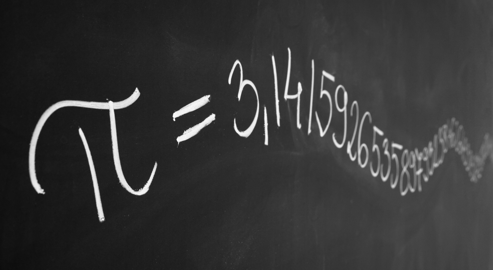

Menú
Opencourse
Cursos
Enseña
Debate
Novedades
Perfil
Cerrar sesión
Explora nuevas habilidades
Mostrar categorias
Ofimática
Programación
Ciencias
Literatura
Fotografía
Producción audiovisual
Cocina
Economía y finanzas
Matemática
Buscar
Retomar por donde me quedé
O ver todo mis cursos
Algebra
El álgebra (del árabe: الجبر al-ŷabr 'reintegración, recomposición') es la rama de la matemática que estudia la combinación de elementos de estructuras abstractas acorde a ciertas reglas. Originalmente esos elementos podían ser interpretados como números o cantidades, por lo que el álgebra en cierto modo originalmente fue una generalización y extensión de la aritmética. En el álgebra moderna existen áreas del álgebra que en modo alguno pueden considerarse extensiones de la aritmética
Algebra
El álgebra (del árabe: الجبر al-ŷabr 'reintegración, recomposición') es la rama de la matemática que estudia la combinación de elementos de estructuras abstractas acorde a ciertas reglas. Originalmente esos elementos podían ser interpretados como números o cantidades, por lo que el álgebra en cierto modo originalmente fue una generalización y extensión de la aritmética. En el álgebra moderna existen áreas del álgebra que en modo alguno pueden considerarse extensiones de la aritmética
Algebra
El álgebra (del árabe: الجبر al-ŷabr 'reintegración, recomposición') es la rama de la matemática que estudia la combinación de elementos de estructuras abstractas acorde a ciertas reglas. Originalmente esos elementos podían ser interpretados como números o cantidades, por lo que el álgebra en cierto modo originalmente fue una generalización y extensión de la aritmética. En el álgebra moderna existen áreas del álgebra que en modo alguno pueden considerarse extensiones de la aritmética
Algebra
El álgebra (del árabe: الجبر al-ŷabr 'reintegración, recomposición') es la rama de la matemática que estudia la combinación de elementos de estructuras abstractas acorde a ciertas reglas. Originalmente esos elementos podían ser interpretados como números o cantidades, por lo que el álgebra en cierto modo originalmente fue una generalización y extensión de la aritmética. En el álgebra moderna existen áreas del álgebra que en modo alguno pueden considerarse extensiones de la aritmética
Algebra
El álgebra (del árabe: الجبر al-ŷabr 'reintegración, recomposición') es la rama de la matemática que estudia la combinación de elementos de estructuras abstractas acorde a ciertas reglas. Originalmente esos elementos podían ser interpretados como números o cantidades, por lo que el álgebra en cierto modo originalmente fue una generalización y extensión de la aritmética. En el álgebra moderna existen áreas del álgebra que en modo alguno pueden considerarse extensiones de la aritmética
Actualizaciones en tus grupos y debates

¿Números irracionales?
En matemáticas, un número irracional es un número que no puede ser expresado como una fracción m⁄n, donde m y n sean enteros y n sea diferente de cero.1 Es cualquier número real que no es racional, y su expresión decimal no es ni exacta ni periódica. Un decimal infinito (es decir, con infinitas cifras) aperiódico, como √7 = 2,645751311064591... no puede representar un número racional. A tales números se les nombra "números irracionales". Esta denominación significa la imposibilidad de representar dicho número como razón de dos números enteros. El número pi ( π {\displaystyle \pi } \pi), número e y el número áureo ( ϕ {\displaystyle \phi } \phi ) son otros ejemplos de números irracionales.
¿Números irracionales?
En matemáticas, un número irracional es un número que no puede ser expresado como una fracción m⁄n, donde m y n sean enteros y n sea diferente de cero.1 Es cualquier número real que no es racional, y su expresión decimal no es ni exacta ni periódica. Un decimal infinito (es decir, con infinitas cifras) aperiódico, como √7 = 2,645751311064591... no puede representar un número racional. A tales números se les nombra "números irracionales". Esta denominación significa la imposibilidad de representar dicho número como razón de dos números enteros. El número pi ( π {\displaystyle \pi } \pi), número e y el número áureo ( ϕ {\displaystyle \phi } \phi ) son otros ejemplos de números irracionales.
¿Números irracionales?
En matemáticas, un número irracional es un número que no puede ser expresado como una fracción m⁄n, donde m y n sean enteros y n sea diferente de cero.1 Es cualquier número real que no es racional, y su expresión decimal no es ni exacta ni periódica. Un decimal infinito (es decir, con infinitas cifras) aperiódico, como √7 = 2,645751311064591... no puede representar un número racional. A tales números se les nombra "números irracionales". Esta denominación significa la imposibilidad de representar dicho número como razón de dos números enteros. El número pi ( π {\displaystyle \pi } \pi), número e y el número áureo ( ϕ {\displaystyle \phi } \phi ) son otros ejemplos de números irracionales.
¿Números irracionales?
En matemáticas, un número irracional es un número que no puede ser expresado como una fracción m⁄n, donde m y n sean enteros y n sea diferente de cero.1 Es cualquier número real que no es racional, y su expresión decimal no es ni exacta ni periódica. Un decimal infinito (es decir, con infinitas cifras) aperiódico, como √7 = 2,645751311064591... no puede representar un número racional. A tales números se les nombra "números irracionales". Esta denominación significa la imposibilidad de representar dicho número como razón de dos números enteros. El número pi ( π {\displaystyle \pi } \pi), número e y el número áureo ( ϕ {\displaystyle \phi } \phi ) son otros ejemplos de números irracionales.
¿Números irracionales?
En matemáticas, un número irracional es un número que no puede ser expresado como una fracción m⁄n, donde m y n sean enteros y n sea diferente de cero.1 Es cualquier número real que no es racional, y su expresión decimal no es ni exacta ni periódica. Un decimal infinito (es decir, con infinitas cifras) aperiódico, como √7 = 2,645751311064591... no puede representar un número racional. A tales números se les nombra "números irracionales". Esta denominación significa la imposibilidad de representar dicho número como razón de dos números enteros. El número pi ( π {\displaystyle \pi } \pi), número e y el número áureo ( ϕ {\displaystyle \phi } \phi ) son otros ejemplos de números irracionales.